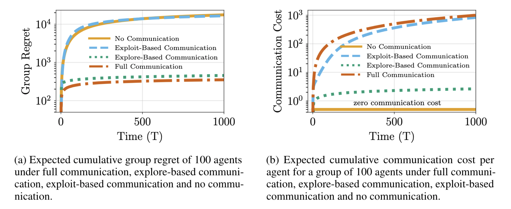

We study cost-effective communication strategies that can be used to improve the performance of distributed
learning systems in resource-constrained environments.
For distributed learning in sequential decision making, we propose a new cost-effective partial communication
protocol. We illustrate that with this protocol the group obtains the same order of performance that it obtains
with full communication. Moreover, we prove that under the proposed partial communication protocol the
communication cost is \(O(\log T)\), where \(T\) is the time horizon of the decision-making process. This improves
significantly on protocols with full communication, which incur a communication cost that is \(O(T)\). We validate
our theoretical results using numerical simulations.
Bibtex
@article{madhushani2020distributed,
title={Distributed Learning: Sequential Decision Making in Resource-Constrained Environments},
author={Madhushani, Udari and Leonard, Naomi Ehrich},
journal={ICLR workshop on Practical Machine Learning for Developing Countries},
year={2020}
}